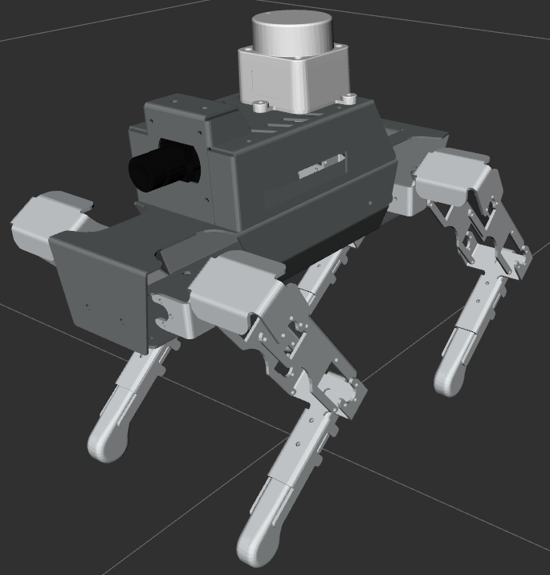
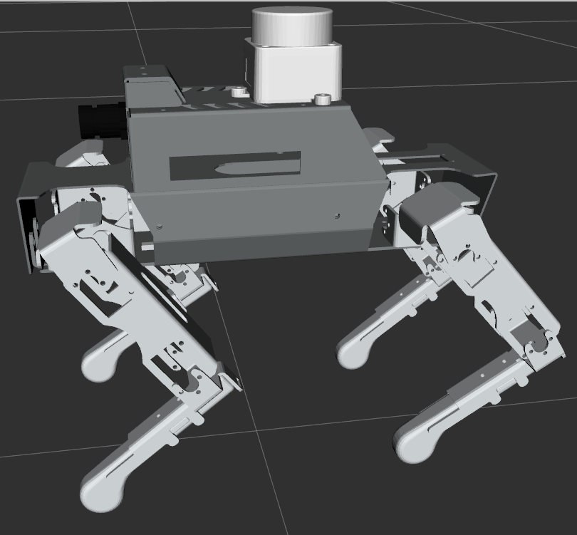
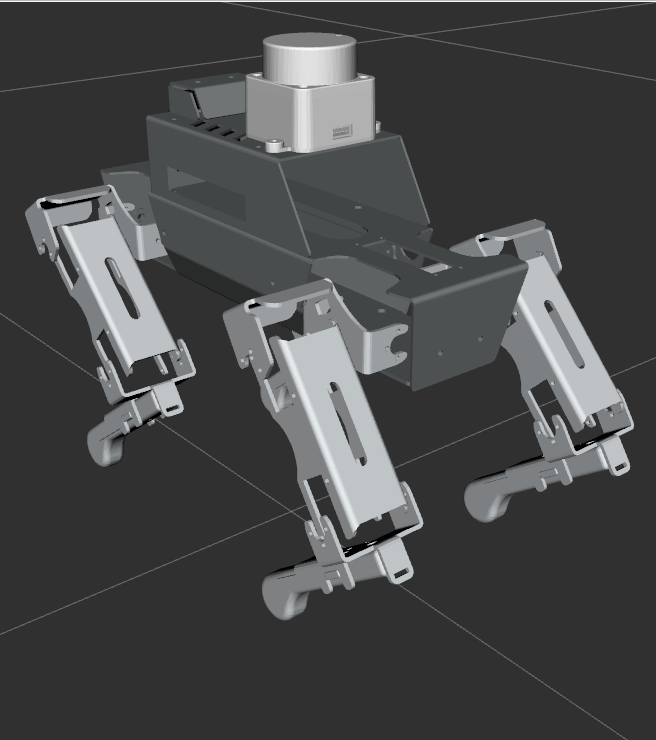

Examples of M4DM in practice: an AI-driven robotic control architecture, a manual-vs-automated trade-off, a machine-vision proof of concept, a quadruped developed on its digital twin — with more to come.
A simulation of a test bench built on the ROS 2 framework, using a PDDL solver for task planning. A user states a goal in plain language — "measure diameter hole H013" — and the system plans and executes the sequence itself, instead of a hand-written program.
The test bench is built around a Fanuc CRX-20 cobot fitted with a Stäubli quick-change interface, letting the robot swap its own end-effectors depending on the task.
It's also the proof point for a broader capability: complex machines — measurement systems, robotic cells — are often only operable by a small group of specialists, a bottleneck of dependency, long training, and equipment left under-used outside the hours those specialists are available. The test bench's natural-language layer shows that a plain instruction can be translated into an executable plan without sacrificing the rigour of the underlying control — a capability that extends wherever a complex machine could be opened up to more of the team.
The same planning core also drives M4DM's decision-comparison work: modelling different task allocations between operator and machine, and comparing the resulting plans on cycle time, cost, ergonomics, and flexibility — side by side, not one estimate at a time.
Applied to an aircraft fuselage assembly case: fastening two fuselage sections along their orbital joint, comparing a full-manual process against a gantry-assisted hybrid one, with a Gantt-based comparison of makespan and per-resource occupancy.
A splice-relocation concept based on a Zivid 2 camera, validated using Gazebo simulation before committing to physical testing. Targets: lateral position < 0.5 mm, tilt < 1°, distance to surface < 0.1 mm, with Cp > 1.66 and Cpk > 1.33.
The modelling validates the concept before investing in a representative proof of concept for qualification — the same discipline the method applies everywhere else.
A legged robot, simulated in Gazebo as a digital twin that exposes the same API as the genuine hardware: the control software and the operator interface run unchanged against the twin or the real robot, so programs are developed and fine-tuned on the twin before they are deployed.
The walking policy is trained in MuJoCo with PPO and an asymmetric actor-critic: a 2 × 64 MLP actor that sees only what the real sensors provide (joint angles, IMU, gait phase) and outputs a bounded residual over a deterministic trot generator driving the 12 servomotors at 50 Hz, while the critic is given privileged simulation data — terrain ahead, true velocity, foot contact — and is discarded after training. A model-based route (JEPA with CEM planning) was evaluated and retired in favour of this one.


